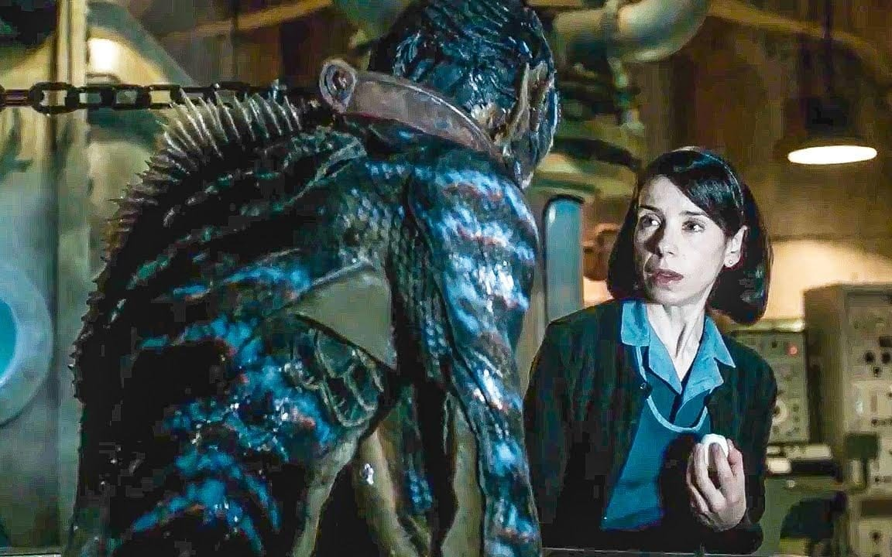

The obvious work of director Guillermo del Toro, this film takes place during the Cold War as a mute cleaning lady falls in love with a captured amphibian man. This film then follows her as she breaks him out with the help of her friends. The film has del Toro’s fingerprints all over it and has been inspired first and foremost by The Creature from the Black Lagoon. The film was also nominated for Best Director, Best Actress, Best Supporting Actress, Best Supporting Actor, Best Original Screenplay, Best Cinematography, Best Costume Design, Best Film Editing, Best Original Score, Best Production Design, Best Sound Editing, and Best Sound Mixing. 
Back